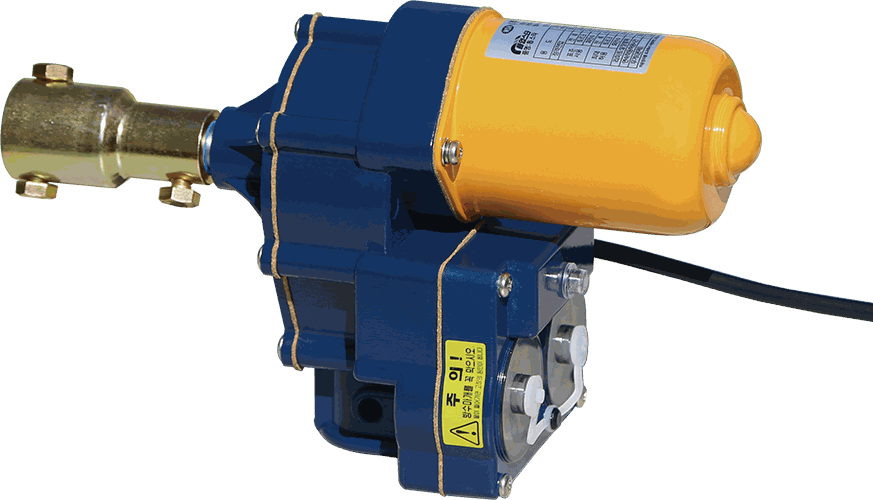
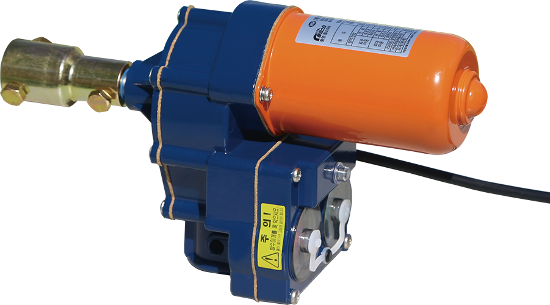

DC24V 전동개폐기(비닐용)
DC24V 모터로 구동되는 롤·업·다운 방식의 전동개폐기입니다.
모델 선택 기준1 비닐 두께 확인›2 필요한 토크 비교›3 리미트 회전수 확인
모델

WSM-4035
얇은 비닐필름 권장- 표준 토크
- 4 kg·m
- 리미트
- 35회전
- 회전 속도
- 3.5 rpm
상세 보기 ›

WSM-6035
두꺼운 비닐필름 권장- 표준 토크
- 6 kg·m
- 리미트
- 35회전
- 회전 속도
- 4.0 rpm
상세 보기 ›

WSM-2475
얇은 비닐필름 권장- 표준 토크
- 5 kg·m
- 리미트
- 75회전
- 회전 속도
- 3.3 rpm
상세 보기 ›

WSM-2475H
두꺼운 비닐필름 권장- 표준 토크
- 6 kg·m
- 리미트
- 75회전
- 회전 속도
- 3.7 rpm
상세 보기 ›